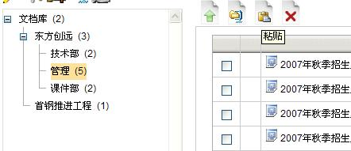

可视化文件夹 |
Contineo在目录里保存文档。类似于本地一个固定磁盘。
选择文件夹可以显示出一些文档。文件夹下包含文档和下级目录。
在高级控制器里显示出来。

从左到右的顺序：创建文档，导入zip存档文件，剪切和删除。
下面的文档显示在所选的文件夹里。
文档菜单是联合工具，鼠标放在选项图标上就被激活。

取消文档
删除功能是简单和快速的。
要删除文档选中文档名字左边的复选框。
点击删除图标，系统将要求确认，选择“确定”，进行删除。

| 被删除的文件不能恢复既不从客户也不从管理员。 在系统删除了所有资料和文件时，链接文档被删除。 |
|
剪切和粘贴
这个功能把一个文档从一个文件夹移动到其他文件夹里，除了下载的和再导入的。
阐明了“删除文档”的操作摘要。
执行操作的4个步骤：
- 在文件夹里选中一个欲剪切的文档。
- 点击剪切图标（剪切图标变成粘贴图标）
- 在左边目录选择目的文件夹（选择的文件夹显示为黑体）
- 在文件夹里点击图标“粘贴”来粘贴文档。

2.剪切图标

4.粘贴图标